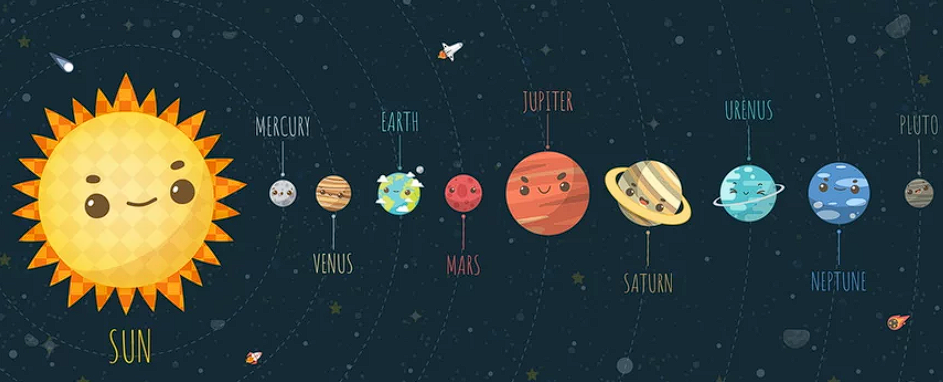

Planet
Distance from sun
Radius
Mercury
57 million kilometers
2439.7 kilometers
Venus
108 million kilometers
6051.8 kilometers
Earth
150 million kilometers
6371 kilometers
Mars
228 million kilometers
3389.5 kilometers